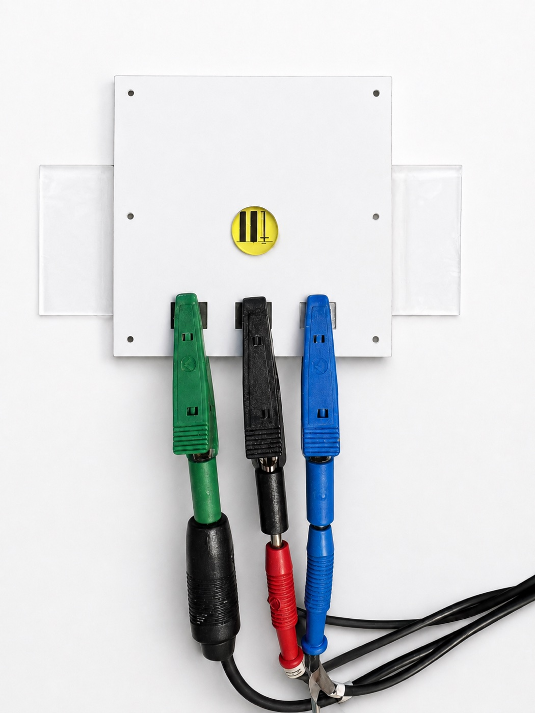
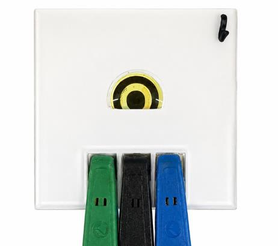
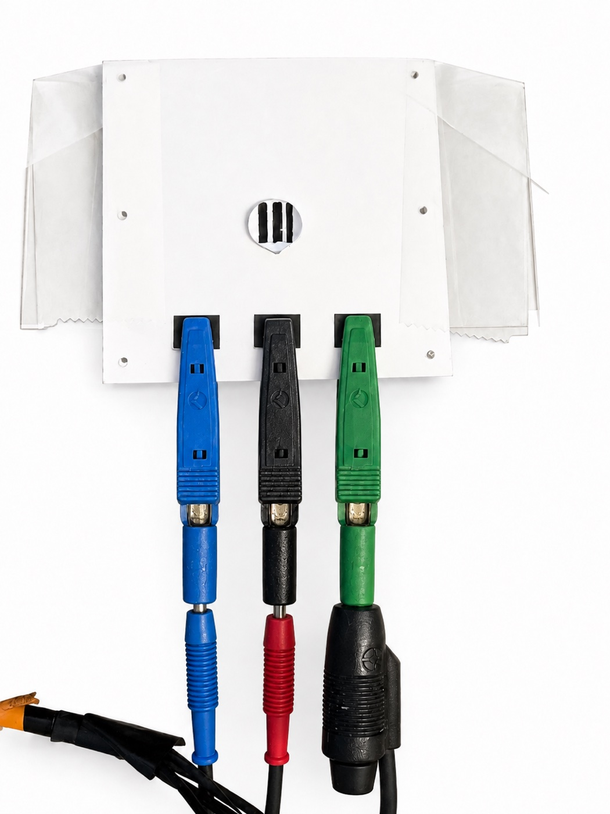

I build small diagnostic devices end to end. CAD and batch fabrication, surface chemistry, electrochemical characterisation, and the Python that turns raw instrument files into auditable results.
Luna Marouf. Final-year Honours BEng Mechanical Engineering, York University Lassonde, 3.8/4.0, graduating 2027. Biosensor project lead at the Advanced Center for Microfluidics Technology and Engineering (ACuTE), from April 2025.
Open to R&D and internship roles in medical devices, diagnostics and sensing.

A disposable three-electrode chip with sprayed graphene electrodes and a molecularly imprinted polymer film grown around cytochrome c. Full fabrication detail and a measured concentration response, R² = 0.946.

The second-generation successor to the cytochrome c platform, a purpose-designed circular electrode targeting the hepatitis C virus Envelope 2 protein. This is where most of my current lab time goes.

A third sensor platform, a graphene straight-channel three-electrode device with a PEDOT:PSS working electrode, targeting the Gram-negative and Gram-positive bacterial markers LPS and LTA.
Membranes produced at 22 to 25 g/m² by electrospinning, with solution rheology processed and power-law fit in MATLAB, and a multilevel factorial design relating process parameters to the membrane produced.
Surface coating chemistry to reduce fouling on RO membranes, keeping operating pressure and energy consumption low on a triplicate RO system. Characterised by SEM and FTIR.
Tribometer testing of several graphene coating types, comparing coefficient of static friction and wear-track depth, with applied writeups on graphene coatings for tires and rotary blades.
Course design projects, most recent first.
A pontoon-mounted dual-axis tracker with an Arduino controller and light-sensing feedback. Concept selection by weighted decision matrix, and a rack-and-pinion drive verified against AGMA pitting and bending criteria.
A 3D-printed remote-controlled car for medical use, with a 4-gear drivetrain, steering and control programming. Machined the shaft holes on the lathe and mill.
Guides drivers to vacant parking spots, with an MQ-2 and VOC sensor pair that triggers a ventilation fan above a set vehicle-fume threshold. Built with LabVIEW and Arduino.
A −18°C cold storage facility for individually quick frozen berries, 30 to 365 day storage life, designed in CoolSelector.
Two design assignments, heat exchanger sizing and optimal fin design, both worked through analytically in Microsoft Excel.
Research and development member, then electrical team lead managing a nine-member subteam through engine harness integration, ECU I/O mapping and sensor work.
Mechanical and electrical team member. Altium schematics for propulsion power circuits, boat CAD, and FEA to minimise weight and von Mises stress while maximising safety factor.
Designed the competition package for the biomedical event. The competition itself did not run due to scheduling issues.
I am in the final year of an Honours BEng in Mechanical Engineering at York University's Lassonde School of Engineering, focused on biomedical devices and biosensors, graduating 2027 with a 3.8/4.0 average. Since April 2025 I have led the electrochemical biosensor project at the Advanced Center for Microfluidics Technology and Engineering.
The work spans design and fabrication through to analysis. I draw the devices in SolidWorks, laser cut and spray them in batches, run the electrochemistry, and wrote the Python pipelines that process the results and screen the devices before they are tested. The through-line across every project here is building the physical thing and then building the tooling that makes its measurements trustworthy.